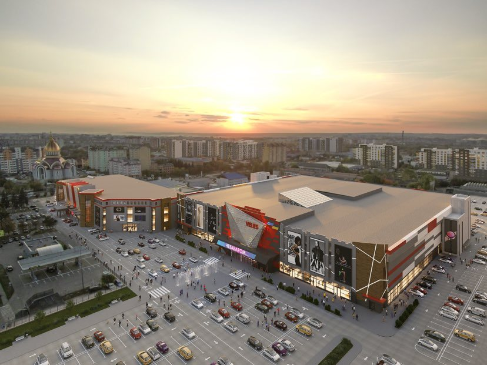
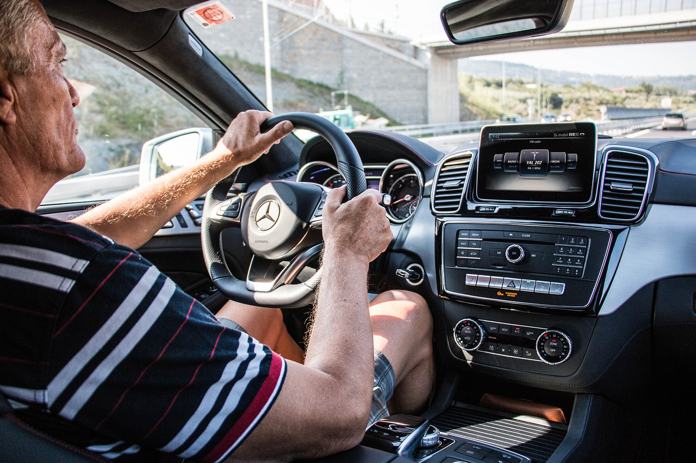

Протягом трьох років роботи в геодезії і кадастрі, я мав неймовірну можливість працювати над безліччю захоплюючих проектів. Кожен проект був унікальним і вимагав від мене великої відповідальності та професійного підходу. Мій робочий день завжди був наповнений різноманітними проектами, включаючи топографічні виміри, планування земельних ділянок, встановлення геодезичних маркерів і розрахунок геодезичних мереж. Кожен проект потребував від мене точності, вміння працювати зі спеціалізованим обладнанням та знання сучасних методів геодезії. Ці проекти вимагали високого рівня координації, комунікації та здатності працювати під тиском. Крім того, я брав участь у проектах з кадастрового обслуговування, які включали реєстрацію прав власності, складання технічних паспортів на нерухомість і вирішення земельних спорів.
У межах мого професійного досвіду я мав можливість працювати над проектом кріплення вентильованого фасаду для торгового центру "Велес". Моя роль полягала в розробці конструктивного рішення, що забезпечувало надійне кріплення фасаду до будівлі. Під час проектування я аналізував архітектурні вимоги та враховував специфіку будівлі, забезпечуючи оптимальний вибір матеріалів та систем кріплення. Моя робота включала розробку детальних креслень, створення технічної документації та взаємодію зі спеціалістами інших напрямків. Завдяки моєму досвіду та технічним знанням, я забезпечив високу якість та надійність кріплення фасаду, враховуючи всі необхідні норми безпеки та сталості. Результатом моєї роботи було успішне впровадження вентильованого фасаду на торговому центрі "Велес", який став важливою архітектурною складовою цього об'єкту.


Я мав можливість глибоко зануритись у процес наповнення бази геоданих під час розробки навігаційних систем. В моїх обов'язках було збирати та організовувати різноманітні географічні дані, які були основою для створення точних та досконалих навігаційних карт. В рамках проекту мені доводилося виконувати складні завдання з обробки геоданих, включаючи їх аналіз, перевірку на достовірність, форматування та інтеграцію з різними джерелами інформації. Моя ретельна робота з даними допомагала створювати високоякісні навігаційні системи, які забезпечували точне відображення та надійне орієнтування для користувачів. Я забезпечував високу якість та достовірність геоданих, що є важливими факторами для успішної реалізації навігаційних проектів.